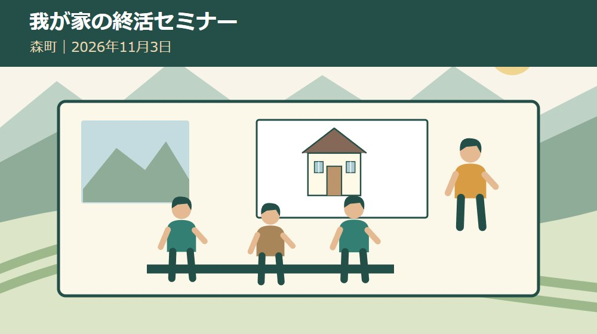
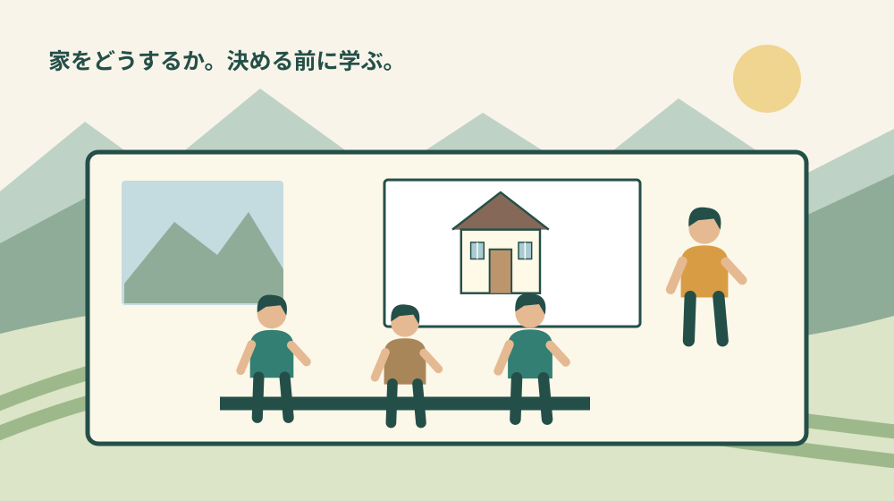
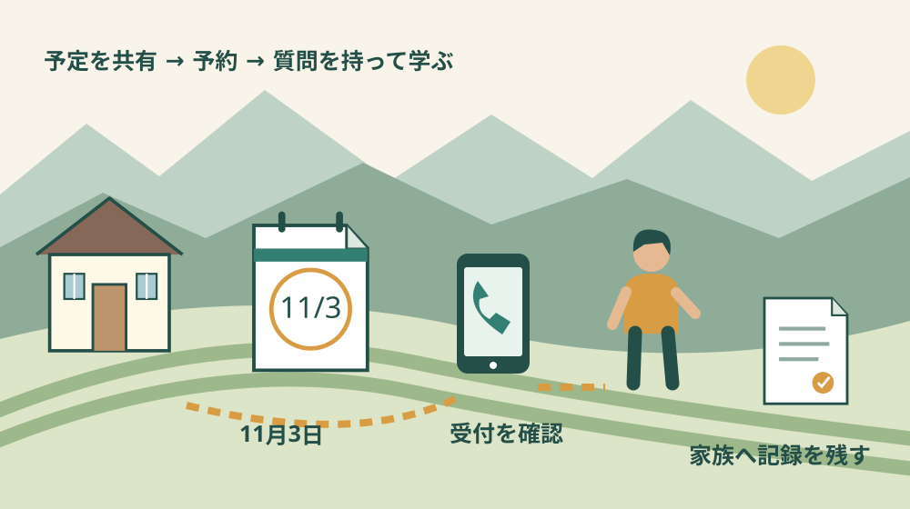

空き家・実家・相続
森町の我が家の終活セミナー｜11月3日の参加案内

Q. 実家を売るか決めていなくても、11月3日の会で学べる？
A. 森町の我が家の終活セミナーは、2026年11月3日10時～11時30分、森町文化会館小ホールで開催。参加無料・予約制30人で、満員になり次第受付終了です。売却を決める前に空き家と相続の基本を学ぶ機会として検討できます。申込みは森町定住推進課0538-85-6321または公式チラシの二次元コードへ。残席は要確認です。
実家を支えてきた家族が、売却を決めずに学ぶ機会
森町の実家をどうするかという話は、家を片付ければ終わるものではありません。草刈りや税の支払いを続けてきた人、町外から通う人、思い出があって手放せない人がいます。先に結論を求めると、負担の話をする入口まで閉じてしまうことがあります。
私は大石浩之（磐田市／不動産業）です。2026年11月3日に森町文化会館で開かれる「我が家の終活セミナー」を、家族が基本を学ぶ機会として紹介します。参加することと、実家を売ると決めることは別です。まず開催条件と予約方法を整理します。
確認日は2026年9月29日です。県公式サイトに掲載された森町の開催チラシを画像本文まで確認しました。残席数は分からないため、必ず参加できるとは書けません。今日の一歩は、希望する家族へ日程を共有し、予約の担当を決めることです。
11月3日、森町文化会館小ホールで90分
令和8年度森町「我が家の終活セミナー」は、2026年11月3日火曜日・祝日に開催されます。時間は10時～11時30分で、会場は森町文化会館小ホールです。チラシに記載された住所は、静岡県周智郡森町森1485です。
参加は無料、定員は30人、予約が必要です。定員になり次第受付終了と案内されています。開催日まで申込みを受け付けると断定できず、残席の表示も確認できません。家族の参加人数が見えたら、受付状況を申込先に確かめてください。
主催は森町、共催は静岡県です。講師は株式会社はるかぜ代表取締役の田島友子氏です。チラシは、空き家にしないためのポイントや、相続の際に気を付けることなどを扱うと案内しています。登記申請をその場で済ませる会ではありません。
私は、90分という時間に、往復の移動や同行者の送迎も加えて予定を立てたいと考えます。町外から来る家族がいるなら、現地で合流するのか、一緒に出かけるのかを先に決めます。無料でも移動と予定調整の負担は残るためです。
県の一覧ページには2026年9月10日更新とありますが、チラシ自体の公表日は確認できませんでした。この更新日を森町セミナーの募集開始日とは扱いません。今から申し込めるかを知るには、案内の日付ではなく受付状況を確かめます。

申込みは森町定住推進課へ、電話または公式チラシの二次元コード
森町開催チラシの問合せ・申込先は森町定住推進課、電話0538-85-6321です。電話またはチラシの二次元コードから申し込む案内になっています。電話では「11月3日の我が家の終活セミナー」と伝え、参加希望人数を確認してもらうと用件が明確です。
チラシには氏名、住所、電話番号、参加人数、同行者名の記入欄があります。家族をまとめて申し込む予定なら、同行者の希望を聞き、連絡を受け取る人を決めておくと段取りが進みます。本記事のコメントや第三者のサイトへ個人情報を送る必要はありません。
二次元コードを使う場合は、末尾に載せた県公式サイトの森町開催チラシを開いてください。家族へ画像だけが転送されると、古い案内なのか判断しにくくなります。公式の掲載元のリンクと開催日を一緒に共有する方法を勧めます。
県の開催一覧本文には電話番号の市外局番がチラシと異なる表記になっています。本記事は、森町の空き家バンク案内でも一致を確認できる0538-85-6321を採用しました。申込みではチラシと町公式の番号を照合して連絡してください。
電話をかけたことだけで予約完了と考えず、受け付けてもらえたか、人数に相違がないかを確認します。二次元コードの申込みでも、画面に出る受付案内を読みます。受付方法の詳細は現時点の窓口の案内に従い、家族へ結果を共有してください。
都合が変わった場合の連絡方法も、予約時に聞いておくと安心です。参加する人が減った、同行者が変わったなどの変更を放置しないためです。これはチラシの必須手続としてではなく、30人の予約制の会に参加する際の私の提案です。
講座は「空き家」「空き家になったら」「実家の終活」の3部
森町開催チラシは、第1部「空き家について」、第2部「空き家になったら」、第3部「実家の終活について考えてみませんか」という構成を示しています。空き家の基本から、その後の対応、家族の実家の今後へと考える入口です。
講師が説明すると案内されているのは、空き家にしないためのポイントや相続の注意点です。個々の家の相続人を確定する、税額を計算する、売却価格を出すなどの個別対応をチラシは約束していません。聞ける範囲と、後で専門家へ相談する範囲を分けて参加します。
家族で学ぶ準備として、実家について気になっていることを一人一つ書いておく方法を私は勧めます。誰が鍵を持つのか、名義を知っているか、今後も草刈りへ通えるか。講座の前に家族の意見を一つに揃える必要はありません。
質問を作るときは、事実と希望を分けます。「父の名義のままだと思う」は未確認の情報、「家は残したい」は希望です。どちらも家族の話には必要ですが、同じ欄へ書くと、何を調べればよいかが曖昧になります。
空き家の相続前準備を扱う記事は、家族で話し始める際の補助になります。準備できていなかったことを責めるためではなく、今から確かめる項目を選ぶために読んでください。セミナーへの参加も、その一つの方法です。
良い点｜個別の決断より前に、家族の共通の言葉を持てる
我が家の終活セミナーの良い点は、いきなり家の処分方法を決めず、空き家と相続の基本を学ぶ入口があることです。家族が同じ話を聞けば、後で「管理」「登記」「引継ぎ」と言ったとき、何を指すかを確かめやすくなります。
私は、実家を支えてきた人と町外の家族が、同じ資料を読む機会に意味があると考えます。現地の草木を見ている人には急ぎでも、離れて暮らす人には変化が伝わらない場合があります。一般の説明を聞くことで、個人への不満だけにせず話し始められます。
森町内で開催されるため、町の空き家相談の入口と結び付けて考えやすい点も利点です。ただし、町内なら誰もが移動しやすいとは限りません。私は、会場までの手段を確認したうえで、参加する人と後で内容を共有する人を分けてもよいと考えます。
無料であることは、家族が参加を検討する際の材料になります。一方で、予定を空ける、仕事や介護の代わりを頼む、送迎するといった負担は別です。参加できない家族が無関心だと決めつけず、後からノートを共有する方法も用意します。
学んだ結果、まだ売らないと考えることもあり得ます。私は、売る・貸す・管理を続けるという選択肢を理解したうえで保留することと、分からないまま先送りすることは違うと考えます。次の確認先が一つ分かれば、参加の成果として十分に扱えます。
注文したい点｜一般の講座で、自分の家の答えが全部出るとは限らない
我が家の終活セミナーは学ぶ機会であり、個別の家の登記や税務を確定する機会とは区別が必要です。チラシからは、個別相談の時間や資料を提出して審査する仕組みは確認できません。参加すれば相続手続が片付くという期待で出かけないようにします。
私は、参加後の案内には「次にどの専門家へ何を持っていくか」まで示されると助かると考えます。家族の疑問が登記なのか、修繕なのか、活用なのかで相談先は異なります。講座の中で分からなければ、終了後に適切な相談先を確認する質問を残します。
会場での配慮や個別の持ち物など、チラシにない条件もあります。移動や着席に心配がある場合は、事前に窓口へ必要な配慮を相談してください。未確認の設備や対応を本記事で保証することはできません。参加を決めるための条件として聞いておきます。
実家の権利証や戸籍などの原本を、案内がないまま大量に持ち込む必要はありません。私は、まず自分の疑問を書いたメモを作り、個人情報を人前で詳しく話し過ぎないようにしたいと考えます。個別資料の相談は、適した窓口と方法を確認してから進めます。
参加後に家族へ「先生が言ったから売る」と結論だけを持ち帰ることにも慎重でありたいと思います。一般的な説明が、実家の状態にそのまま当てはまるとは限りません。説明で分かったことと、自分の家ではまだ確認していないことを分けて持ち帰ります。

11月28日の袋井市の個別相談会とは、日時も形式も違う
静岡県の案内には、2026年11月28日に袋井市月見の里学遊館で開かれる、袋井市・森町の空き家無料相談会も掲載されています。こちらは専門家が個別の相談に対応する枠です。11月3日の森町文化会館でのセミナーと混同しないでください。
日程の覚え方は、11月3日が森町文化会館で学ぶ講座、11月28日が袋井市での個別相談です。会場名だけでなく、市町、日付、催し名を一緒に家族のカレンダーへ入れます。森町の名前が両方に出てくるため、予約先まで同じと思い込まないようにします。
個別の家の相談を考えている場合は、2026年の空き家無料相談会の記事を確認してください。予約条件や受付状況はそれぞれ別です。セミナーの予約を取ったから、後日の相談枠も確保されるという関係ではありません。
私は、まず基本を学びたい人はセミナー、物件の具体的な困りごとが整理できている人は個別相談という使い分けを提案します。両方へ参加することが必須ではありません。家族の移動と時間の負担に合う入口を選び、未解決の質問だけ次へ渡します。
対案・結論｜今日は11月3日の予定を家族へ共有する
森町の我が家の終活セミナーに関心があるなら、今日は11月3日10時～11時30分という予定を家族へ共有します。「実家を売る相談へ行く」ではなく、「空き家や相続の基本を学ぶ会がある」と、チラシの内容に沿って伝える方法を私は勧めます。
連絡文には、森町文化会館小ホール、無料、予約制30人、満員で受付終了という条件を添えます。返信で聞くのは参加の希望と人数です。家の処分方針への賛否を同時に求めなければ、予定の調整から話を始めやすくなります。
次に、予約する人、窓口からの連絡を受ける人、同行者へ結果を伝える人を決めます。一人が全部担当する場合でも、その人が誰かを家族に知らせます。複数の家族が重ねて申し込むことや、誰も申し込んでいない状態を避けるためです。
満員だった場合も、実家の確認を止める必要はありません。森町の定住推進課へ相談の入口を確認する、家族で名義や管理担当を調べるなど、別の一歩があります。セミナーに参加できないことと、準備ができないことを同じにしないでください。
森町の資料を使い、参加後のノートを実家の記録に変える
森町の空き家・空き地バンクは、町が物件の情報を提供する制度です。交渉や契約は町が行わず、管理も所有者側が担います。セミナーで活用に関心を持ったとしても、登録すれば管理の仕事が町へ移るわけではありません。
所有者向けの空き家バンクの記事では、登録を考える前の準備を整理しています。セミナー後に読むなら、すぐ申込むためではなく、土地と建物の名義、設備、残置物などの未確認箇所を選ぶために使えます。
森町の第2期空家等対策計画のページは、町全域を対象に空き家への対応を進める資料を公開しています。計画があることと、一軒ごとの修繕や家族の合意が決まることは別です。町の取組を知りながら、自宅について確かめる仕事を具体化します。
私は、講座のノートを「分かったこと」「実家では未確認」「次に聞く相手」の三つへ分ける方法を勧めます。例えば登記の基本が分かっても、実家の名義が不明なら未確認欄へ残します。知識を得たことと、家の調査が終わったことを混ぜないためです。
家族への報告は、一度にすべて変える計画でなくて構いません。次の帰省で書類の置き場所を確かめる、草刈りの担当へ費用を聞くなど、一つ選びます。すでに管理している人のやり方を否定するのではなく、その仕事を続けられるよう材料を足します。
大石の視点｜学ぶことを、売却への同意にしない
私は、セミナーへ参加することを家族の売却同意として扱いません。実家を大切にしてきた人が、まだ決められないのには理由があります。結論を急がず、維持費、移動、名義、次の担い手という具体的な材料を知る時間として使いたいと考えます。
私なら、家族へ日程を送るとき「参加しても、その日に家の結論は出さない」と一文を添えます。これは実際の相談を再現した話ではなく、私の考えです。学ぶために出かける人へ、家族全員を説得する役目まで背負わせたくないからです。
一方で、講座を聞くだけで安心してしまわないかという迷いもあります。私は、参加後に何を一つ調べるかまで決めると、学んだことが実家の管理につながると考えます。名義か、書類の場所か、次の草刈り担当か。家族の負担に合わせて選べばよいと思います。
11月3日の会は、森町の実家を支えてきた家族が基本を学ぶ入口です。残席を保証することはできませんが、日程を共有し、0538-85-6321へ受付を確かめることはできます。売却を決めずに、決めるための材料を一つ増やす。その順番で案内します。
よくある質問
森町の我が家の終活セミナーへの参加前に、予約と講座の範囲を確認してください。
実家の売却を決めていなくても参加を検討できますか？
森町の我が家の終活セミナーは、空き家や相続、実家の今後を学ぶ内容です。チラシに売却を決めた人だけという条件はありません。2026年11月3日10時～11時30分、森町文化会館小ホールで開催され、予約が必要です。参加を家族の売却同意とは扱わず、学びたいことを一つ整理して、窓口へ受付状況を確認してください。
予約はどこへ、何人までできますか？
チラシの申込先は森町定住推進課0538-85-6321、または公式チラシの二次元コードです。定員は会全体で30人であり、1家族の上限人数という意味ではありません。氏名、住所、電話番号、参加人数、同行者名を確認して申し込みます。満員になり次第受付終了で、残席は未確認です。希望人数を伝えて受付状況を確かめてください。
登記や税金をその場で個別に相談できますか？
11月3日の会は空き家と相続等を学ぶセミナーで、個別の登記や税務の判断を行う枠はチラシから確認できません。11月28日に袋井市で開かれる空き家無料相談会とは別の催しです。自分の家の具体的な相談を希望する場合は、必要な相談先や予約方法を窓口へ確認してください。セミナー予約で個別相談枠が確保されるわけではありません。
実家の情報を一つずつ整理したい方は、実家カルテも確認できます。売却未定でも使える、本サイト運営会社の民間サービスです。森町役場の手続ではなく、利用は任意です。
公式情報源
2026年9月29日確認（2026年9月確認）。開催・受付状況、制度や費用は変わる場合があります。行動前に公式情報を確認し、個別の登記・税務・契約・工事の判断は担当窓口や専門家に相談してください。